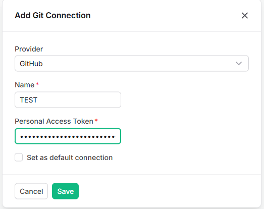
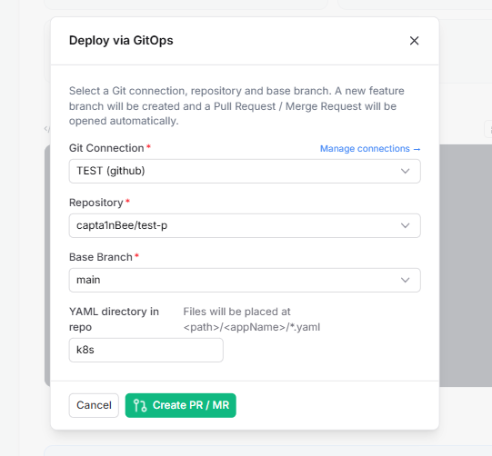
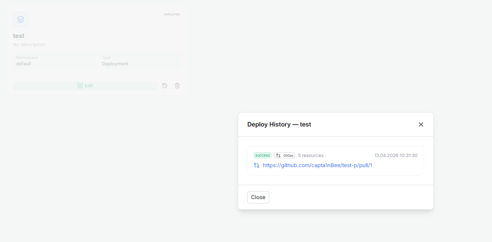

App Creator Engine
App Creator Motoru
The App Creator is an intelligent GUI-to-YAML compiler that transforms multi-step wizard choices into production-ready K8s specifications dynamically bound to Services, Ingresses, and Autoscalers. It supports templates and remote container builds.
App Creator; çok adımlı sihirbaz seçimlerini, Servislere, Ingress'lere ve Autoscaler'lara dinamik olarak bağlı üretime hazır K8s spesifikasyonlarına dönüştüren akıllı bir GUI'den YAML'a derleyicidir. Şablonları (Templates) ve uzaktan konteyner (remote) derlemelerini destekler.
The 8-Step Wizard Workflow
8 Adımlı Sihirbaz İş Akışı
1. Container Build Source
1. Konteyner Derleme Kaynağı
Pull images directly from public/private registries, or dynamically execute a Build from Git pipeline.
İmajları public/private registry'lerden çekin veya dinamik olarak Git'ten Derle (Build from Git) iş akışını tetikleyin.
2. Ports & Environment
2. Portlar ve Ortam Değişkenleri
Expose TCP/UDP ports and inject distinct environment variables securely into your pod configurations.
Konteynerlere (Pod) TCP/UDP portlarını açın ve özel ortam değişkenlerini güvenle yerleştirin.
3. Resource Restrictions
3. Kaynak Kısıtlamaları
Prevent cluster node depletion using precise CPU/Memory limits and guaranteed requests.
Hassas CPU/Bellek limitleri ve garanti edilen talepler aracılığıyla düğüm (node) kaynaklarının tükenmesini önleyin.
4. Workload Strategy
4. İş Yükü Stratejisi
Execute zero-downtime rollouts with RollingUpdate or hard resets via Recreate.
RollingUpdate ile kesintisiz sürüm veya Recreate ile sert sıfırlamalar uygulayın.
5. Networking & Add-ons
5. Ağ ve Eklentiler
Atomic toggles for Services, advanced Ingress routing (with TLS), HPA, ConfigMaps, and encrypted Secrets.
Servisler, Ingress yönlendirmeleri (TLS dahil), HPA, ConfigMap ve şifreli Secret'lar için tetikleyiciler (toggles).
6. Storage & Volume Mounts
6. Depolama (Storage) ve Volume
Securely attach PVCs or mount previously generated ConfigMaps/Secrets directly into internal container paths.
PVC'leri (kalıcı disk) veya oluşturulan ConfigMap/Secret'ları doğrudan konteynerin iç dosya sistemine bağlayın.
7. Compilation & Review
7. Derleme ve Gözden Geçirme
Review the massive final multi-document YAML before initiating deployment. Extract it, or deploy instantly.
Dağıtıma başlamadan önce üretilen kapsamlı çoklu (multi-document) YAML kodunu tam ekran gözden geçirin. Dışa aktarın veya hemen uygulayın.
Native GitOps Integration
Doğal GitOps Entegrasyonu

Secure Provider Connect
Güvenli Sağlayıcı Bağlantısı
Attach GitHub, GitLab or direct URLs securely via Personal Access Tokens mapped directly to K8s Secrets.
GitHub, GitLab veya doğrudan URL bağlantılarınızı; doğrudan K8s Secret'larına eşlenen jetonlar (PAT) ile güvenle bağlayın.

Pull Request Pipelines
Otomatik PR (GitOps) İş Akışları
Instead of pushing to the Kubernetes API, export the entire wizard directly into a Pull Request to your repository.
Sihirbaz sonucunu doğrudan Kubernetes'e basmak (push) yerine, hedef deponuza otomatik bir "Pull Request" olarak gönderin (GitOps).

Deployment Origin Auditing
Dağıtım Kökeni Denetimi
A full forensic view of deployments tracking exactly whether an application was applied "Directly" or "Via GitOps" (with hyperlinks to the exact Git PR branch).
Bir uygulamanın kümeye "Doğrudan" mı yoksa "GitOps Üzerinden" (orijinal Git PR sekmesine bağlantılarla) mi uygulandığını tam olarak izleyen adli dağıtım görünümü.